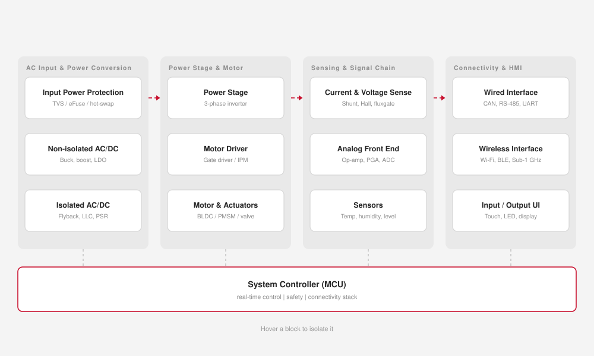

<!doctype html>
<!--
  Simulates a GitHub README: the diagram is embedded as an EXTERNAL image,
  exactly what  produces. No JS touches the SVG.
  GitHub also injects its own stylesheet; we approximate that with a reset.
-->
<html>
<head>
<meta charset="utf-8">
<style>
  html,body{margin:0;padding:0;background:#ffffff}
  img{display:block;margin:0}
</style>
</head>
<body>

</body>
</html>
